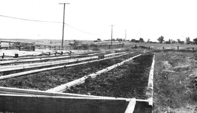
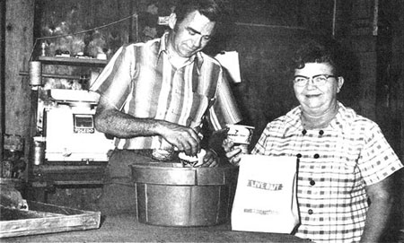
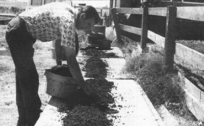

The earthworm-once regarded as a mere creepy-crawler found on the road after a nice soft rain-has risen in status. This underground creature now often dwells in bins, barrels, washtubs and other containers. There, it gives many people a new lease on life by putting bread on their tables and clothes on their backs ... or even by supporting them entirely.
One such person is Doris Hubbell, owner of the Charmer Worm Farm in Sacramento, California. As Doris puts it: "I never thought the earthworm would be just about my best friend, but it is. When my husband had to retire from the construction business because of a bad asthmatic condition we were faced with areal problem: What kind of work could he do that would fully support us and yet not be too hard? Then, since there are at least 90 million fishermen in the United States-including us-we decided that raising earthworms to sell for bait might be just what the doctor ordered."
The Hubbells started their new "farm" with four 4' X 7' bins of red hybrid earthworms. Today Doris (Mr. Hubbell was killed in an auto accident two years ago, and until recently-when Doris decided to go into partnership with Art Muzzin of Sacramento-she operated the business alone) keeps 800 bins, and her customers come from near and far to buy her "livestock" and the fertilizer it produces. The Charmer Farm also ships its worms and their castings all over the United States and Canada.
The red hybrid earthworm which saved the day for the Hubbells should not be confused with the everyday angleworm. The hybrid is a real moneymaker ... a superior type developed for commercial purposes.
Today's red earthworms are larger than their ancestors: The normal length of a well-fed, full-grown specimen is 3-3-1/2 inches, and some are even bigger. The creature is very adaptable to widely varying climates and conditions and will not become restless and crawl away if it's provided with adequate food and moisture.
Like the ordinary angleworm, the hybrid is bisexual ... each and every red wiggler has both male and female reproductive organs. It can-upon mating with another of its species-produce an egg capsule every seven to ten days. The capsules, in turn, each incubate in two or three weeks and release from two to twenty young. During the following 60-90 days, the newly hatched worms themselves mature to breeding age.
This prolific wiggler sells far better to anglers than any other worm because it is tough and lively, stays on the hook and-with its bright red color-excites fish into biting faster. Gardeners are also anxious to buy the hybrid worms because-just like the common varieties from which they were developed-they've proven their worth in the vegetable patch.
Earthworms are now recognized as highly effective natural agents for soil improvement and are especially helpful in loosening and aerating the ground. The little creatures initially perforate the top layers of earth and then gradually penetrate into the subsoil, where their burrows open passages for plant root growth.
The worms also eat soil and organic debris and the resulting droppings or "castings" are a valuable fertilizer in finely granulated form.
H.A. Lunt and H.G.M. Jacobson of the Connecticut Agricultural Experiment Station have made very thorough chemical analyses of earthworm castings and uneaten soil collected from the top six inches of a field. They report that the casts contained about five times as much nitrate, seven times as much available phosphorus, three times as much exchangeable magnesium, eleven times as much potash and one and a half times as much lime (calcium) as the plain dirt. The increases came from the organic material consumed and digested by the worms.
Earthworm castings are, in short, one of the finest organic fertilizers available. They can be purchased from some nurseries and at almost any worm farm ... and if you're going into the business of raising red hybrids yourself, you may want to take advantage of this profitable sideline.
Earthworms are sold throughout the year (although spring and summer are the busiest seasons) and the initial investment in breeding stock for a wiggler ranch varies with the individual "farmer" and the kind of project he plans. "Pit-run" red hybrids, for example, are of various sizes (whatever the spading fork turns up) and can be bought for as little as $2.75 per thousand. Then again, a bin of the worms may sell for up to a flat $150 ... depending on the size of the box and the average maturity of its contents.
Doris Hubbell feels that the raising of earthworms for profit is fairly easy work that doesn't require much initial investment. You don't, for instance, need a fancy or costly container in which to keep your stock. Barrels cut in half, wood pits built around trees or anything else you can dream up will be suitable. Even a simple washtub will accommodate as many as 3,000 worms before the population has to be divided. Climate-and how deeply you want to get into worm raising-will guide you in your choice of a "stable" for your "livestock".
Doris and Art keep their wigglers in 4' X 7' wooden frames which have no bottoms or tops and stand about 2-1/2 feet above ground ... a type of construction that works well in the mild Sacramento climate. Cement bins or cinder-block structures two blocks high are also suitable for warm regions. In a cold area it's best to build such containers three blocks high-with two units below ground level-for better protection from chilly weather.
It's even possible to run a small worm-raising operation right inside a basement or other heated room. A wooden box 3 feet long, 2-1/2 feet wide and 1-1/2 feet high is recommended if you intend to keep your stock indoors. Important: Seal the seams of the container to prevent the creatures from escaping. You should also fit the top of the box with a frame covered with hardware cloth (you can make the setup very convenient by hinging the lid to the bin and adding a small screen-door hook as a fastener).
Another point: Several small drainage holes should be drilled in the bottom of each bin (the worms do have to be watered regularly, you know) and covered with fine-mesh copper screen tacked to the wood. If the boxes are kept in a place where they can't drain freely, small tin cans can be set under the holes to catch the excess drippings.
A basement farm of this type can produce as many as half a million bait or breeder-or an even greater number of pit-run-worms per year. In fact, one retired Vermont school teacher nets a profit of $1,200 annually by raising earthworms in her cellar. Even mobile home owners can-and do-go into this business ... stacking the bins is the answer to their space problem.
No fancy food is required to keep earthworms happy. They'll flourish on all kinds of waste organic material: animal manure, dead plants or a million and one other things lying around free for the taking.
Although many worm growers favor a bedding mixture of equal parts peat moss, soil and rotted manure or compost, Doris and Art have successfully raised big fat wigglers on steer droppings alone. Occasionally they add calf meal to this substance (many breeders use ground cornmeal, poultry mash, soybean meal or similar products). Such feed may be very thinly sprinkled on top of the bedding or buried in trenches through the middle or around the sides of a pit, but should never be mixed into the bedding where it might heat and kill the worms.
The small grower will find that a box of earthworms makes a good garbage disposal unit. Any kitchen refuse-or grass clippings and dried leaves-can be used to feed the creatures, and they'll thrive on it. Unlike the ground feed mentioned above, such garbage may be mixed in with the bedding material to eliminate odors.
The harvesting of worms-the first step in getting them ready for sale-can be done in various ways (on large farms the operation is often done on a moving belt with assembly-line efficiency).
During the summer Doris and Art hire a number of helpers, some of whom work at benches or tables of convenient height for sitting or standing. These particular workers bring the worm-filled compost from the pit to the sorting area in flat shallow trays. Other employees, however, harvest the stock while kneeling directly over the pits. One female worker can pick well over 20,000 wigglers per day from a heavily populated bed.
There's no need to think on such a grand scale for a backyard operation, however. Harvesting at such a location usually requires only two people: one to scoop the worms out of the bins, the other to fill and cover the cups. Most breeders count their earthworms individually or in lots of five or ten when preparing the wigglers for the containers in which they are to be sold.
Various types of packaging are used for shipping worms ... there are even specially designed cartons, attractively printed and fitted with perforated covers to admit air. "Breather" type paper bags-light, efficient and quite inexpensive-are also very popular. Doris and Art pack their hybrids in slightly moistened peat moss placed in both cartons and bags. For further protection, the small containers are then put in either corrugated boxes or lightweight wooden containers for long distance shipping by parcel post (uninsured).
The price for which worms can be sold fluctuates throughout the country. In one area twelve 50-worm cups may wholesale at $3.00 - $4.50, while at the lake fishermen may pay 50 cents-75 cents per container. The success and earnings of your business will vary with locality, season and demand ... plus your original investment and the effort you put into the project.
If you intend your worm farm mainly as a service for fishermen, tell all your sportsman friends-and the neighborhood kids!-about the project. You can also advertise in the newspapers and in hunting and fishing magazines and put up a brightly colored sign to attract attention.
Nor should you overlook the possibility of distributing your worms through dealers, tackle shops, filling stations, nurseries, boat docks ... and nowadays, believe it or not, even through vending machines. And don't forget your other potential customers: laboratories, aquariums, game breeders and, of course, gardeners.
As you can see, earthworms are useful, profitable and not too demanding of one's time. Since red wigglers don't bark, bite, scratch, smell, chirp or need to be watered twice a day and bedded down at night, they are indeed the nearly perfect commercial livestock to keep in your backyard. You can pack up your fishing gear, go away for a weekend and the lively worms will be there-breeding, producing egg capsules, hatching their young and growing big and fat-when you return.
As Doris Hubbell says, "This business is here to stay ... and it's a good way to earn your living."
Some advice for Me gardener who wants to improve his soil.
Check to see if there are earthworms present. If not, have your soil analyzed-most nurseries will do this for nothing-and correct any major problems. Then introduce worms to the vegetable patch.
Earthworms bought to improve a garden or compost pile should be purchased in the fall. At that season many of the wigglers are young and-with the advent of wet, cool weather-will become extremely active and feed on the organic debris in and on top of the ground. This high level of activity continues through autumn and the two seasons that follow. By late spring most of the worms should be mature and-with the coming of summer-will become less and less lively and exert a smaller effect on the soil. If you can keep your earth moist and cool, however, your helpers will remain quite vigorous.
THE SHIELDS EARTHWORM LIBRARY
The late Earl B. Shields, for many years a keen promoter of the worm farm as a home business, also became a major supplier of "how-to" literature on raising wigglers for profit. Shields Publications is still your best bet if you want to do some homework on the subject ... and that same company makes its books available for resale as a moneymaking sideline for commercial growers.
Some sample titles: RAISING EARTHWORMS FOR PROFIT by Earl B. Shields (10th edition, 1973), $2.00. Useful all-round guide to raising and marketing the red hybrid. A-WORMING WE DID GO by Ruth Myers, $2.00. A handicapped woman tells how she started with 1,000 wigglers and built up one of this country's largest worm farms. PROFITABLE EARTHWORM FARMING by Charlie Morgan, $2.00. A detailed study of the animal by a research biologist who is also a practicing breeder. Includes many useful tips on the culture and sale of earthworms and other live bait. EARTHWORM FEEDS & FEEDING by Charlie Morgan, $4.00. A detailed research report on nourishment and disease prevention in the domestic earthworm operation. LET AN EARTHWORM BE YOUR GARBAGE MAN by Henry Hopp, $2.00. An authority for the USDA presents an illustrated treatise on the role of earthworms in the soil. EARTHWORM BUYER'S GUIDE AND DIRECTORY, $2.00. A handbook of the worm industry which lists many hatcheries in the U.S. and Canada and carries the display ads of leading growers.
These and other works are available postpaid from Shields Publications, Box 472, Elgin, Illinois 60120. Please include payment with your order.
|
 Art muzzini and Doris Hubbell packing worms for shipment. |
 Art Muzzini picking worms |
 |